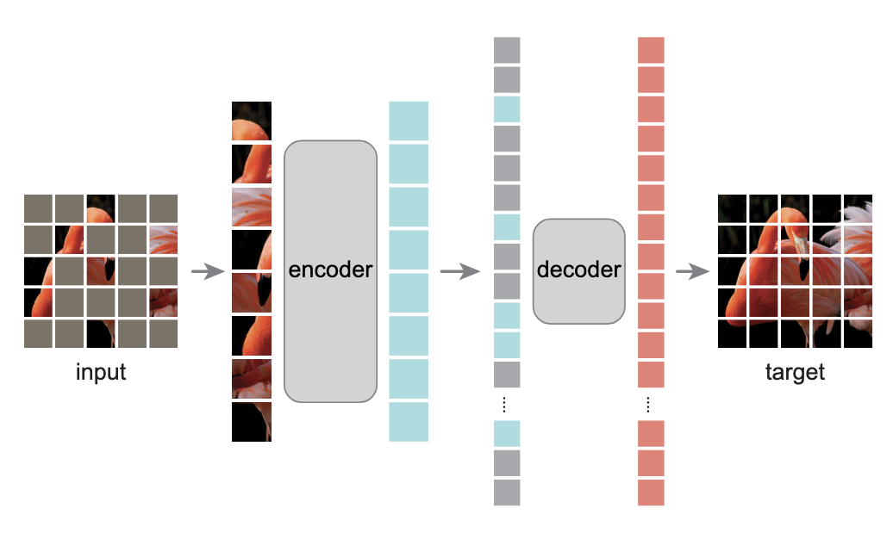
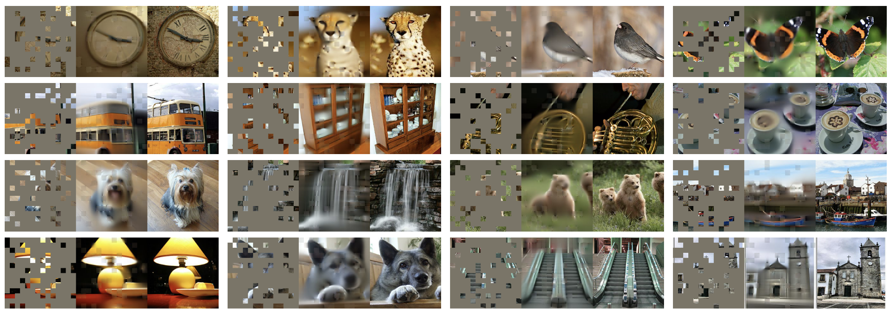

Re-Implementation of He et al.
Description
For my class project, I propose doing a re-implementation of the paper
"Masked Autoencoders Are Scalable Vision Learners" by He et al. A masked
autoencoder removes a portion of some type of data and learns how to
predict the removed content. GPT and BERT apply this method in natural
language processing and this paper applies the technique in computer
vision. The methodology of this paper involves taking in training images
and masking out some percentage of segments. The visible segments are
then encoded with information about what is contained and the position.
From there, a decoder takes in these encoded images and predicts the
gestalt of new masked out images. The paper also goes into more detail
about training various models with slightly tweaked methods and
comparing the MAE method to other ones. The first image shows the basic
process for the masked autoencoder. The second image shows what the
final model produces for various masked outputs next to the original
image.
Goals
-
Understand the methods outlined in this paper and create a list
of steps needed for re-implementation.
-
Train a Neural Network using the optimal parameters so that is
able to plausibly reconstruct images that the model has not
previously seen.
-
Stretch goal: train more neural networks to explore the
tradeoffs between things like percentage masked and the output
of the model.
Figure 1: The Method Used by this Paper

Figure 2: Examples of the Outputs
